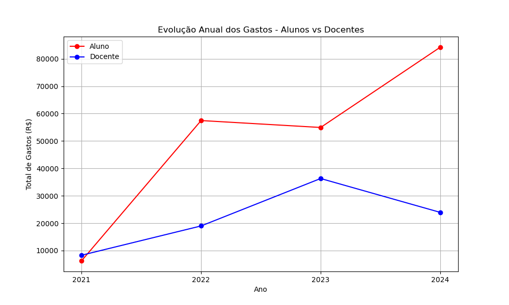
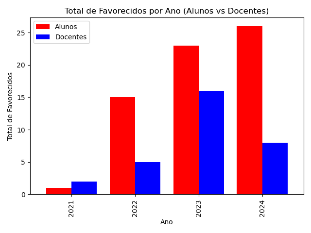

7 Impacto na Sociedade
7.1 Impacto, Caráter Inovador e Internacionalização da Produção Intelectual
O Programa de Pós-Graduação em Tecnologia (PPGT) demonstra uma consistência no envio de alunos e professores ao exterior para apresentação de trabalhos em conferências científicas. Esse investimento é evidente tanto do ponto de vista financeiro quanto pelo número de participantes envolvidos. Os gráficos apresentam essa tendência de uma maneira visual.


7.2 Impacto econômico, social e cultural do programa
Um dos aspectos levantados pelo CAA é a oportunidade de ampliar as parcerias público-privadas (PPP) entre empresas da região de Limeira e o Programa de Pós-Graduação em Tecnologia (PPGT) para melhorar o desempenho do programa nos itens “Impacto econômico, social, ambiental e cultural do Programa” e “Internacionalização, inserção (local, regional, nacional) e visibilidade do Programa”. A região de Limeira, onde a Faculdade de Tecnologia (FT) está localizada, possui indústrias consolidadas em nichos como: (i) metalurgia; (ii) energia; (iii) alimentos; (iv) tecnologia; (v) agropecuária, dentre outros. Algumas dessas empresas possuem seus próprios setores de Pesquisa e Desenvolvimento (P&D), mas outras parecem não dispor de setores próprios para o desenvolvimento de pesquisas.
Por esse motivo, existe uma oportunidade de ampliar as parcerias do PPGT com empresas estratégicas da região. Uma parceria entre um programa de pós-graduação e empresas regionais pode trazer benefícios mútuos significativos, tanto para a academia quanto para o setor produtivo. Para o PPGT, os benefícios incluem maior relevância social e regional, maior atração de recursos, aumento na empregabilidade de egressos e uma transferência de tecnologia mais significativa. Já para as companhias, essa colaboração fornece acesso direto ao conhecimento avançado dos docentes do programa, potencial redução de custos de P&D (tanto em infraestrutura quanto em recursos humanos, fornecidos pela universidade), formação de mão de obra qualificada, dentre outros aspectos.
Um exemplo prático de uma PPP bem-sucedida é o consórcio AgTech Valley, sediado na região de Piracicaba, que reúne empresas do agronegócio e a Escola Superior de Agricultura Luiz de Queiroz (ESALQ) da Universidade de São Paulo (USP) para o desenvolvimento de tecnologias agrícolas. Nesse consórcio, a ESALQ oferece infraestrutura e pessoal para a realização de pesquisas, enquanto as empresas fornecem capital e conhecimento dos desafios do setor. No entanto, essas pesquisas tendem a se concentrar em aspectos específicos da área agrícola (por exemplo, melhoramento genético), visto que a ESALQ não possui um programa voltado para áreas como Engenharia Ambiental, Materiais ou Computação, como o PPGT.
Sendo assim, o PPGT poderia buscar parcerias com o próprio AgTech Valley. Por exemplo, pesquisas envolvendo a aplicação de Inteligência Artificial e Computacional (uma das áreas de estudo de docentes do PPGT) para lidar com os desafios específicos enfrentados pelas empresas agrícolas da região de Piracicaba poderiam beneficiar tanto o PPGT – auxiliando na melhoria dos indicadores de impacto econômico, social e inserção regional mencionados anteriormente – quanto as próprias empresas, otimizando suas atividades-fim.
Contudo, as oportunidades de PPP não se limitam apenas ao exemplo mencionado. Por esse motivo, o CAA realizou um levantamento de potenciais empresas da região de Limeira que poderiam ser procuradas para o estabelecimento de parcerias que aprimorem os indicadores de impacto social e inserção regional. A razão social das companhias, seu setor de atuação, a cidade-sede e um breve comentário sobre suas atividades estão apresentados na tabela a seguir:
| Nome da empresa | Setor | Cidade | Breve descrição |
|---|---|---|---|
| Raízen | Energia | Piracicaba | Aparentemente, a empresa ainda não possui um setor próprio de P&D, o que abre espaço para parcerias nas áreas de computação e ambiental. |
| ArcelorMittal | Metalurgia | Piracicaba | A empresa possui um centro próprio de P&D, mas o CAA vê oportunidades de parceria na área de computação. |
| Caterpillar | Maquinário | Piracicaba | Empresa com investimentos dedicados em P&D. Oportunidades em computação. |
| Equilíbrio Proteção Florestal | Proteção florestal | Piracicaba | Empresa que fornece atividades de monitoramento e gerenciamento de florestas de eucalipto de grandes produtoras de celulose, sem um setor próprio de P&D. Oportunidades de parceria na área de computação e ambiental. |
| Centro de Tecnologia Canavieira (CTC) | Pesquisa em cana de açúcar | Piracicaba | Empresa de P&D especialista em cana de açúcar. Algumas pesquisas se concentram no melhoramento genético da cana. Há oportunidades de parceria na área de computação e talvez ambiental. |
| CCS Tecnologia | Maquinário e serviços | Limeira | Empresa de maquinário e serviços sem aparente setor de P&D. Oportunidades para computação e construção civil. |
| Smartbreeder | Tecnologias agrícolas | Piracicaba | Empresa de tecnologia agrícola, com foco em P&D. Oportunidades para computação e ambiental. |
| Jetbov | Gestão de agronegócio | Piracicaba | Empresa de gestão de agronegócios, com oportunidades na área de computação (por exemplo, big data, aprendizado de máquina, processamento de grandes volumes de dados). |
| MapData | Gestão e desenvolvimento de software | Americana | Empresa sem aparente setor de P&D. Oportunidades na área de computação (por exemplo, big data, aprendizado de máquina, processamento de linguagem natural, etc) |
| Mérieux NutriSciences | Análise laboratórios | Piracicaba | Empresa de análises laboratoriais sem aparente setor de P&D fora do contexto laboratorial. Oportunidade para computação. |
| Arius Sistemas | Desenvolvimento e gestão de software | Americana | Empresa sem aparente setor de P&D. Oportunidades na área de computação (por exemplo, big data, aprendizado de máquina, processamento de linguagem natural, etc) |
| Qyon | Desenvolvimento e gestão de software | Americana | Empresa sem aparente setor de P&D. Oportunidades na área de computação (por exemplo, big data, aprendizado de máquina, processamento de linguagem natural, etc) |
| InPlanet | Ambiental | Piracicaba | Empresa com foco em manejo de solo agrícola e captura de carbono. Oportunidades na área de computação e ambiental. |
| Stanley Electric | Maquinário | Limeira | Empresa de maquinário sem aparente setor de P&D. Oportunidades na área de computação. |
| BRK Ambiental | Ambiental | Limeira | Empresa de saneamento ambiental. Oportunidades na área de computação e ambiental. |
| CNPEM | Energia e Materiais | Campinas | Empresa de energia e materiais com oportunidades na área ambiental, materiais e computação. |
7.3 Visibilidade do programa
A última avaliação do PPGT pela CAPES atribuiu o conceito Muito Bom para a visibilidade do programa. No entanto, a CAA considera que a página do PPGT precisa de melhorias para que se possa alcançar de forma mais eficiente a comunidade científica e o público em geral, informando-os sobre as qualidades e realizações do PPGT.
A CAA analisou o sítio do PPGT em relação a clareza das informações disponibilizadas, facilidade de acesso das informações e aspectos visuais que visem atrair os visitantes.
A seguir, são apresentadas algumas sugestões para a melhoria do sítio do PPGT:
Uniformizar as fotos dos docentes do PPGT, tirando as fotos com mesmo fundo e na mesma época;
Listar orientadores sem foto, apenas com nome e resumo. A foto e detalhes do docente poderão ser vistos acessando o link referente ao orientador.
Criar subdivisão nos Editais para Abertos/Encerrados e por tipo (Internacionalização, Bolsas, etc), dando assim visibilidade à ações que a Capes considera importantes para o Programa;
Listar as disciplinas no próprio sítio do PPGT, não direcionando para o catálogo da DAC;
Apresentar a tabela com a grade de disciplinas no semestre no formato
html(e não empdf), permitindo o acesso rápido à ementas e outras informações;Adicionar o programa nas disciplinas de Tópicos;
Remover a seção “Calendários” pois parece não ter utilidade;
Criar uma seção do tipo FAQ para informações sobre as bolsas Capes;
Remover textos repetidos sobre a bolsa Capes na seção sobre o PED, melhorando o texto para não ficar como uma lista de informações;
Reescrever a seção sobre as Linhas de pesquisa, principalmente para incorporar objetos visuais e deixar o sítio mais atrativo;
Simplicar a seção Regulamentos de forma a ter os regulamentos de cada parte (ex. do PPGT) dentro de sua própria sub-página;
Simplificar a seção FAQ, removendo os ícones e deixando apenas um texto com cada seção. Poderia listar as perguntas abaixo de cada seção e, somente ao clicar na perguntar, o visitante visualizaria a resposta.
Reformular a parte sobre “Laboratórios” (a qual não aparece na página principal do PPGT, apenas na aba lateral), para torná-la mais atrativa. Atualmente ela tem apenas uma lista em ordem alfabética dos laboratórios. Seria melhor ter algo como Infraestrutura e sub-partes como laboratórios de pesquisa, sala de defesa, sala de alunos, etc.;
Adicionar um local na página onde se possa acessar as teses/dissertações produzidas (título, resumo, aluno, orientador e link para o PDF no repositorio SBU);
Remodelar a página de forma que a parte principal evidencie as linhas de pesquisa (com fotos dos laboratórios, orientadores e alunos trabalhando, etc), e os trabalhos feitos pelos alunos (com fotos de alunos trabalhando nos laboratórios). Em segundo plano, outras informações como ingresso, regulamentos, editais, comissão, disciplinas, etc seriam apresentadas. Pequenas reportagens sobre os trabalhos dos alunos junto com os orientadores poderiam ser periodicamente apresentadas na parte principal da página. Essas reportagens poderiam conter pequenos vídeos onde os alunos falariam do seu trabalho.
Melhorar e amplicar a versão na língua inglesa da página. A ampliação deveria ser para conter as linhas de pesquisa, projetos em andamento e informações para ingressantes.